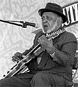
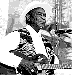

"Blues is not really a form of music; it's a lifestyle" - Chris Whitley

Блюзовая общественность приветствовала решение суда отписать все финансовое наследие Роберта Джонсона его 69-летнему незаконнорожденному сыну. Как раз в момент объявления решения, в нью-йоркском Центральном парке проходил блюзовый фестиваль. Единственный ученик Джонсона Роберт-младший Локвуд и близкий друг и соратник Джонсона в блюзовых странствиях Дэвид "Ханейбой" Эдвардз возглавили список музыкантов специального концерта, посвященного почти исключительно песням Роберта Джонсона.
"Когда я видел, как он с коротко стриженной седой бородой идет к сцене в своем элегантном светло-лимонном костюме с голубой электрической 12-стрункой, он выглядел на свой возраст. Но когда он начал играть - возраст был над ним не властен," - сказал о 85-летнем Эдвардсе один из молодых участников концерта. Наиболее известные участники концерта: Джон Хэммонд (чей отец разыскивал Джонсона, чтобы пригласить его на концерт в Карнегги-холл, но опоздал - Джонсон был уже убит) и Крис Уитли, который сказал, закрывая свое выступление: "На самом деле, блюз - это не форма музыки. Это способ жизни." Кроме того, в концерте принял участие актер Гай Дэвис (Guy Davis), удостоенный премии "За поддержку блюза" (W.C. Handy "Keeping the blues alive" Award) за исполнение им роли Джонсона в театральной постановке "Провести черта" ("Trick the Devil").В Центральном парке с программой песен своего приемного отца Хаулин Вулфа выступил гитарист Хьюберт Самлин (участник лучших вулфовских записей и правая его рука по жизни). Аккомпанировал ему Ливон Хелм (Levon Helm), барабанщик группы "The Band" (с которой "Дилан стал электрическим"). "Бэнд" известны своим поклонением блюзу. Но совершенно неожиданным стал выбор вокалиста. Им выступил David Johansen, солист прото-панк группы "Нью-йоркские Куклы"-"New York Dolls" (ныне он выступает под именем Buster Poindexter). "Это, типа, замечательнейший день в моей жизни, - сказал он. - Первую пластинку Хаулин Вулфа я взял, когда мне было 14. А стоять здесь рядом с Хьюбертом Самлиным - это просто божественно, хотя и чертовски жарко."
За Самлиным сцену в Центральном парке подпалил Ар-Эл.Бурнсайд, исполнивший жесткий сырой трансцендентальный электроблюз миссиссипских кабаков. В барабаны молотил его внук, Седрик Бернсайд.